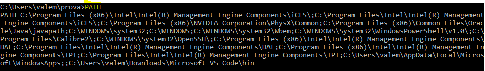

| a | b | c| d | e | f | g | h | i | l | m | o | p | r | s | t | v | x | w | |||||||||||||||||
PATH | Visualizza o imposta un percorso di ricerca per file eseguibili. |  | |||||||||||||||
PAUSE | Sospende l'elaborazione di un file batch e visualizza un messaggio. | ||||||||||||||||
POPD | Ripristina il valore precedente della directory corrente salvato con PUSHD. | ||||||||||||||||
Stampa un file di testo. | |||||||||||||||||
PROMPT | Cambia il prompt dei comandi di Windows. | ||||||||||||||||
PUSHD | Salva la directory corrente e poi la cambia. | ||||||||||||||||